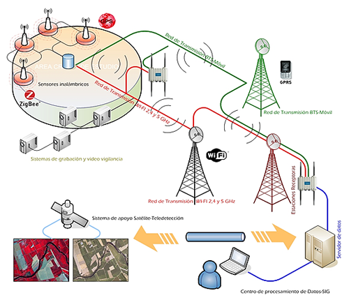
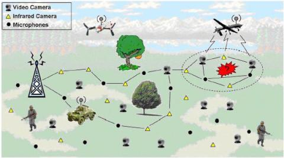
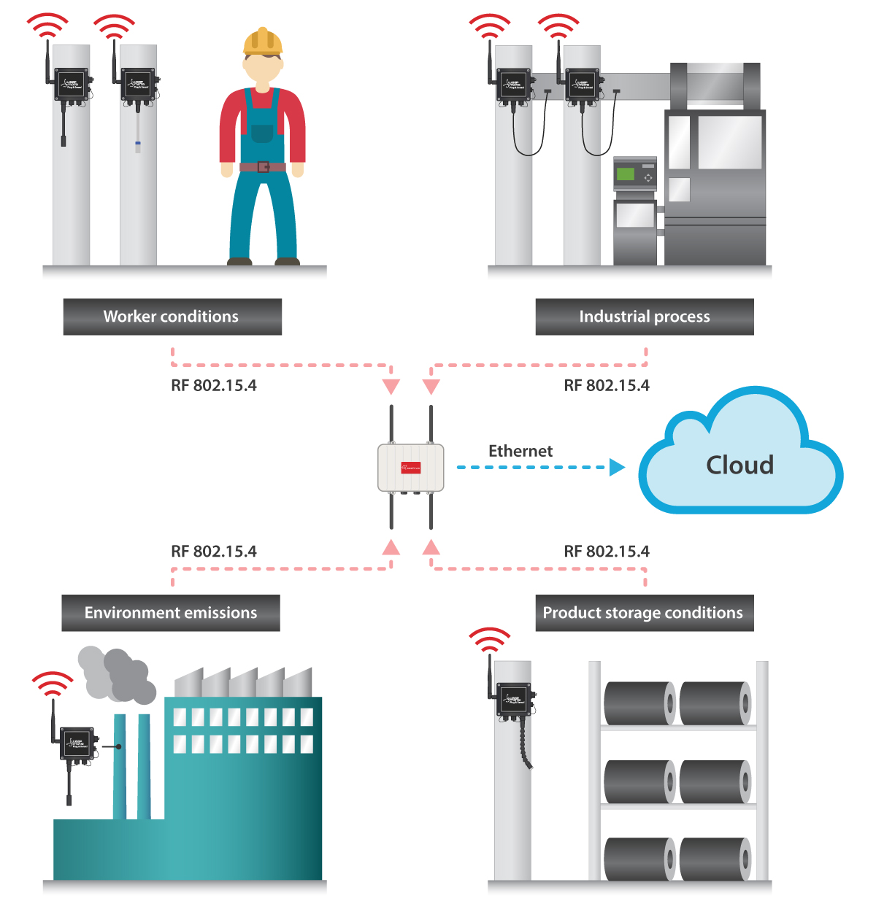

<section>
    <div class="content">
        <h1 class="title">Exemplos</h1>
        <!-- <app-carrossel></app-carrossel> -->
        <h3>RSSF para monitoramento de queimadas</h3>
        <div class="img">
          
        </div>
        <h3>Aplicação militar de RSSF para monitoramento de campo.</h3>
        <div class="img">
          
        </div>
        <h3>Modelo de RSSF auxiliando um processo industrial em 4 módulos, utilizando protocolos RF 802.15.4 e Ethernet.</h3>
        <div class="img">
          
        </div>
      </div>


</section>
